초음파비파괴검사산업기사(구) (2003-03-16 기출문제)
1과목: 초음파탐상시험원리
1. 6인치 두께의 알루미늄판에 표면으로부터 3인치 깊이에 표면과 평행하게 큰 결함이 놓여 있다면 어떤 탐상법으로 결함이 가장 잘 검출될 수 있는가?
- 수직 탐상법
- 판파 탐상법
- 표면파 탐상법
- 경사각 탐상법
(정답률: 알수없음)

2. 초음파 탐상기에서 교정이 된 조절용 감쇠기의 역할은?
- 탐촉자의 흡음을 조절해 준다.
- 탐상기의 동적인 증폭 범위를 증가시켜 준다.
- 주파수의 범위를 확대시켜 준다.
- 탐촉자에 공급된 전압을 감쇠시켜 준다.
(정답률: 알수없음)
3. 다음 중 Rayleigh에 의해 최초로 설명된 파(Rayleigh wave)는?
- 횡파
- 종파
- 수직파
- 표면파
(정답률: 알수없음)
4. 오스테나이트계 스테인레스강 용접부의 초음파탐상시험에 관한 다음 설명 중 바른 것은?
- 용접부를 종파가 진행할 때 종파음속은 진행방향과 시험주파수에 따라 변한다.
- 용접부를 종파가 진행할 때 음속 및 감쇠값은 진행방향과 주상정 성장방향의 관계로 변한다.
- 용접부를 횡파가 진행할 때 음속은 진행방향과 주상정 성장방향과 관계없이 항상 일정하다.
- 용접부를 횡파가 진행할 때 감쇠는 진행방향과 주상정 성장방향과 관계없이 항상 일정하다.
(정답률: 알수없음)
5. 시험체 표면 콘트라스트를 직접 관찰하지 않는 비파괴시험법은?
- 자분탐상시험
- 와전류탐상시험
- 육안시험
- 누설시험
(정답률: 알수없음)
6. 다른 비파괴검사법에 비해 초음파탐상시험의 장점을 열거한 것 중 틀린 것은?
- 다른 시험방법에 비해 투과능력이 좋아 두꺼운 시험체의 시험이 가능하다.
- 작은 결함에 대하여 높은 감도를 얻을 수 있다.
- 표면근처 얇은 층안에 존재하는 결함의 검출에 가장 적합하다.
- 한면만이라도 접근할 수 있으면 검사가 가능하다.
(정답률: 알수없음)
7. 주어진 일정 시간동안 초음파 탐상기기가 발생시킬 수 있는 펄스의 갯수를 무엇이라 하는가?
- 펄스 길이
- 펄스 회복시간
- 주파수
- 펄스 반복율
(정답률: 알수없음)
8. 다음 중 비파괴검사법에 대해 설명이 잘못된 것은?
- 내부 결함의 검출에 적당한 방법은 방사선투과시험과 초음파탐상시험이다.
- 초음파탐상시험에서는 초음파의 진행방향에 평행한 방향의 결함을 검출하기 쉽다.
- 표층부 결함의 검출에 적당한 것은 자분탐상시험과 와전류탐상시험이 있다.
- 용접부의 기공을 검출하기에 가장 좋은 시험법은 방사선투과시험이다.
(정답률: 알수없음)
9. 탐촉자 성능중 분해능이 의미하는 것은?
- 저면에코와 지연에코를 구분하는 능력
- 송신펄스와 수신펄스의 주파수를 구분하는 능력
- 인접한 결함으로부터의 에코를 분리하는 능력
- 불감대 영역을 구분하는 능력
(정답률: 알수없음)
10. 동일한 1[MHz]의 주파수를 가진 탐촉자에서 시간 및 거리분해능이 가장 양호한 것은?
- 공기로 흡음시키는 수정 탐촉자
- 페놀수지로 흡음시키는 수정 탐촉자
- 페놀수지로 흡음시키는 티탄산바륨 탐촉자
- 에폭시로 흡음시키는 황산리튬 탐촉자
(정답률: 알수없음)
11. 용접부의 경사각탐상에 대한 설명 중 바른 것은?
- 면상결함은 결함으로의 초음파의 입사 각도가 변하면 에코높이가 현저히 변화한다.
- 내부 용입부족과 루트용입부족은 결함의 크기가 동일하다면 에코높이는 거의 동일하다.
- 융합불량은 형상이 복잡하기 때문에 에코높이는 블로홀보다 항상 낮게 나타난다.
- 동일 탐상면을 탐상하면 모든 용접부의 결함은 1회 반사법보다 직사법의 경우가 에코높이가 높게 된다.
(정답률: 알수없음)
12. 초음파 탐상기를 사용하여 물체의 두께를 측정할 때 초기 조정에 반드시 필요한 사항이 아닌 것은?
- 영점 조정
- 측정물과 동일 재질(음속)인 두께를 알고 있는 시험편에 의한 시간축의 조정
- 게인의 조정
- 펄스폭의 조정
(정답률: 알수없음)
13. 강판의 두께 100mm를 왕복 전파하는 초음파(종파)의 전파시간은? (단, 강재중의 종파속도는 5900m/s로 한다)
- 약 1만분의 3초
- 약 100만분의 30초
- 약 3초
- 약 3분
(정답률: 알수없음)
14. 원거리 음장영역에서 초음파 빔의 에너지 집중은?
- 빔의 폭에 비례한다.
- 빔의 중심에서 최대가 된다.
- 빔의 외곽에서 최대가 된다.
- 빔의 외곽 및 중심에서 동일하게 나타난다.
(정답률: 알수없음)
15. 탐촉자와 근접한 반사원을 분리하기가 어려운 것을 개선 하여 탐촉자와 근접한 결함검출에 용이하도록 제작된 탐촉자는?
- 사각탐촉자
- 샌드위치형 탐촉자
- 분할형 탐촉자
- 가변각형 탐촉자
(정답률: 알수없음)
16. 경사각탐상에서 시편의 두께가 증가할 경우 스킵거리는 어떻게 되는가?
- 감소한다.
- 증가한다.
- 변하지 않는다.
- 1/2씩 감소한다.
(정답률: 알수없음)
17. 초음파 에너지강도가 100으로 송신되어, 수신될 때는 10이 되었다. 이 때의 감쇠되는 dB값은 얼마인가?
- 6dB
- 12dB
- 15dB
- 20dB
(정답률: 알수없음)
18. 다음은 결함의 유해성에 대해 기술한 것이다. 올바른 것은?
- 결함을 가지고 있는 구조물의 강도가 저하하는 양상은 그 결함의 형상과 방향에 따라 다르다.
- 곡면이 있는 결함은 주로 단면적의 감소에 기인하여 강도를 증가시킨다.
- 가늘고 긴 결함은 단면적의 감소 이외에 결함부의 지시길이에 기인하여 강도가 증가한다.
- 표면결함과 내부결함에서 동일종류, 동일치수의 결함이면 내부결함의 경우가 표면결함보다 유해하다.
(정답률: 알수없음)
19. 다음 중 동일 재질 및 동일 주파수에서 속도가 가장 느린 초음파는?
- 종파
- 횡파
- 표면파
- 압축파
(정답률: 알수없음)
20. 강판의 초음파탐상시험에 대해 기술한 것이다. 올바른 것은?
- 완전박리형의 라미네이션과 같은 중(重)결함의 탐상도형에는 저면에코는 나타나지 않고 결함에 의한 다중반사에코가 나타난다.
- 비금속개재물이 집적하여 생긴 중결함의 탐상도형에는 저면에코가 나타나는 방향에 적산효과가 생기는 특징이 있다.
- 건전부의 탐상도형에서는 결함에코 만이 나타난다.
- 강판의 결함은 압연에 의해 판면에 평행하게 퍼져있는 것이 많기 때문에 판두께 방향의 사각탐상에 유효하다.
(정답률: 알수없음)
2과목: 초음파탐상검사
21. 음향 임피던스가 각각 Z1과 Z2인 두 매질의 경계면에 수직하게 매질 1로 부터 매질 2로 초음파가 입사될 때 음압 반사율을 나타내는 식은?
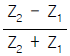
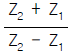
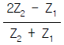
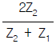
(정답률: 알수없음)
22. 초음파 비파괴평가 방법(UNDE)에 활용되고 있는 초음파의 정보가 아닌 것은?
- 초음파의 RF 신호
- 초음파의 편광정보
- 초음파의 화상정보
- 초음파의 스펙트럼 정보
(정답률: 알수없음)
23. 강재에서 다음 중 초음파의 속도가 큰 것부터 나열된 것은?
- 횡파 ＞ Rayleigh파 ＞ 종파
- 종파 ＞ 횡파 ＞ Rayleigh파
- 횡파 ＞ 종파 ＞ Rayleigh파
- 종파 ＞ Rayleigh파 ＞ 횡파
(정답률: 알수없음)
24. 탐촉자의 진동자크기보다 작은 기공과 융합불량이 거리가 같은 곳에, 같은 크기가 있다면 일반적으로 스크린상의 에코높이는 어떻게 나타나는가? (단, 음파는 결함에 수직방향으로 입사된다.)
- 융합불량 에코는 나타나지만 기공 에코는 나타나지 않는다.
- 융합불량의 에코가 기공 에코보다 높다.
- 기공 에코와 융합불량 에코가 똑같이 나타난다.
- 기공의 에코가 융합불량 에코보다 높다.
(정답률: 알수없음)
25. 그림은 5Z10x10A70에 대하여 STB-AI R100면을 이용하여 측정범위 250mm에 조정하였을 때의 탐상도형이다. 올바른 것은?
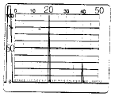
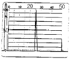
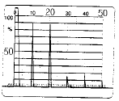
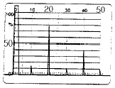
(정답률: 알수없음)
26. 두께 20mm인 강용접부를 실측 굴절각 70도의 탐촉자로 탐상하여 빔의 거리 110mm가 되는 곳에서 결함 에코를 검출했다. 이 결함의 탐상면으로부터의 깊이는?
- 1.2mm
- 1.8mm
- 2.4mm
- 3.0mm
(정답률: 알수없음)
27. 초음파 탐상기 화면에 나타난 어떤 신호치 A를 14dB만큼 증폭시켰을 경우 원래 A 보다 몇 배로 증폭 되었는가?
- 2배
- 5배
- 10배
- 7배
(정답률: 알수없음)
28. 경사각탐상법에서 단일 탐촉자를 사용시 다음 중 어떤 결함을 검출하기가 어려운가?
- 초음파의 진전 방향과 수직으로 놓인 평면 결함
- 비교적 큰 슬래그 혼입
- 시험편 표면과 평행으로 놓인 결함
- 서로 인접한 작은 불연속 면
(정답률: 알수없음)
29. 탐촉자의 진동자 재질중 티탄산바륨(barium titanate)의 장점이 아닌 것은?
- 가장 좋은 송신 효율을 갖는다.
- 파형 변이의 영향을 받지 않는다.
- 불용성이며, 화학적으로 안정하다.
- 100℃까지 온도에 의해 영향을 받지 않는다.
(정답률: 알수없음)
30. 초음파가 불연속부의 뒤쪽에도 도달하거나 또는 격자 등에 입사할 때 특정방향으로 강해지거나 약해지기도 하는 파동의 현상은?
- 간섭
- 중첩
- 분산
- 회절
(정답률: 알수없음)
31. 경사각탐상에서 0.5S 또는 1S라고 하는 기호는 무엇을 의미하는가?
- 스킵거리를 표시하는 기호
- 감도표시의 기호
- 입사점과 단면의 거리를 표시하는 기호
- 탐상면의 거칠기를 표시하는 기호
(정답률: 알수없음)
32. 다음 시험편중 경사각탐촉자의 굴절각을 측정하는데 사용되지 않는 것은?
- STB-A1 Block
- IIW-2형(MINIATURE Block)
- DSC형 Block
- RB-4 Block
(정답률: 알수없음)
33. 초음파탐상시험법을 원리적 측면에서 분류한 것 중 아닌 것은?
- 투과법
- 공진법
- 펄스 반사법
- 직접 접촉법
(정답률: 알수없음)
34. 탐촉자의 진동자 두께와 주파수와의 관계는?
- 두께와는 전혀 무관하다.
- 얇을수록 높은 주파수를 발생
- 두꺼울수록 높은 주파수를 발생
- 종파는 두꺼울수록, 횡파는 얇을수록 높은 주파수를 발생
(정답률: 알수없음)
35. 다음 중 판재의 경사각 탐상에서 검출하기 어려운 것은?
- 음파에 수직인 균열
- 여기저기 흩어져 있는 균열
- 입사면에 평행한 균열
- 연속적인 작은 불연속
(정답률: 알수없음)
36. 어떤 기기나 장치를 표준시험편과 비교하여 교정하는 과정을 무엇이라 하는가?
- 보완
- 보정
- 감쇠
- 각도변형
(정답률: 알수없음)
37. 보정시험편의 노치(Notch)가 사용되는 목적은?
- 횡파의 거리진폭 교정
- 면적진폭 교정
- 판재의 두께 교정
- 표면근처의 분해능 결정
(정답률: 알수없음)
38. 용접부의 경사각탐상에 대한 다음 설명 중 올바른 것은?
- 측면의 용입불량(루트혼입불량)은 모드변환손실이 있기 때문에 검출이 곤란하다.
- 비드에서의 에코는 결함에코보다 항상 작게 나타나기 때문에 무시해도 좋다.
- 동일 탐상면에서 탐상하면 모든 용접부의 결함은 1회 반사법보다 직사법이 에코높이가 높게 나타난다.
- 면상결함은 결함에 초음파의 입사각도에 바뀌면 에코높이는 현저히 변화한다.
(정답률: 알수없음)
39. 수직 탐상법에 대한 다음 설명 중 옳은 것은?
- 일반적으로 주파수가 낮은 경우 표면에 가까운 결함의 탐상이 가능하다.
- 초음파 감소가 큰 경우 낮은 주파수를 선택한다.
- 낮은 주파수 사용시 결함이 탐상면에 대해 경사되어 있으면 결함에코높이가 경사되지 않은 경우보다 낮아지는 비율이 크다.
- 탐상면이 거친 경우 높은 주파수 쪽이 시험기에 적합하다.
(정답률: 알수없음)
40. 주강 제품을 2MHz로 시험했는데 저면에코가 충분히 나타나지 않았다. 이 때 전체적으로 임상에코를 관찰할 수 있다면 어떻게 해야 하는가?
- 저면에코가 충분히 나타날 때까지 탐상감도를 높인다.
- 시험주파수가 적절하지 않으므로 주파수를 낮은 것으로 사용해야 한다.
- 감도가 너무 높은 것이므로 저면에코에 관계없이 탐상감도를 낮춘다.
- 시험주파수가 적절하지 않으므로 주파수를 높은 것으로 사용해야 한다.
(정답률: 알수없음)
3과목: 초음파탐상관련규격 및 컴퓨터활용
41. ASME Sec. XI에서는 초음파 탐상결과 결함지시의 합부판정은 다음과 같이 한다. 그림과 같이 내압을 받는 면에 수직 및 수평선을 그어 결함지시를 정(직)사각형으로 나타낸다. 그림에서 길이 ℓ, 높이 2d, 표면에서 떨어진 거리가 s일 때, 이 결함에서 a는? (단, 0.4d ＞ S : 이 결함은 표면하 결함 ⇒ a = 2d+S, 0.4d ≤ S : 이 결함은 표면 결함 ⇒ a = d)
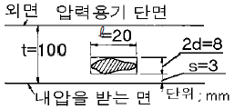
- 1.5mm
- 4mm
- 8mm
- 11mm
(정답률: 알수없음)
42. KS D 0040에서 5 Z 5 x 20 ND의 기호중 ND가 의미하는 것은?
- 수직 탐촉자의 직경
- 송신용 탐촉자의 외경
- 진동자의 재질 기호
- 2진동자 수직 탐촉자 기호
(정답률: 알수없음)
43. ASME Sec. XI내의 부속서(Subsection)중 원자력 발전소내 Class1 부품에 대한 요구사항이 수록된 것은?
- IWA
- IWB
- IWC
- IWD
(정답률: 알수없음)
44. KS B 0817에서 시험결과의 기록 및 보고시 흠집정보의 기록에 필요한 내용에 해당되지 않는 것은?
- 최대에코의 높이
- 감도 보정량
- 흠집의 지시길이
- 흠집의 평가결과
(정답률: 알수없음)
45. KS B 0831에 규정된 표준시험편 STB-A3는 용접부시험에 사용된다. 이 시험편의 주요 사용목적과 거리가 먼 것은?
- 경사각 탐촉자의 입사점 및 굴절각의 교정
- 측정범위 조정
- 탐상감도 조정
- 탐상기의 원거리 분해능 측정
(정답률: 알수없음)
46. ASME Sec.Ⅴ, Art.5에 의한 초음파탐상검사를 하기 위해 직경 200mm의 곡률을 가진 재료로 대비시험편을 만들었을 때 이 시험편을 사용할 수 있는 시험체 직경의 범위는?
- 160mm이상 260mm미만
- 200mm이상 300mm미만
- 240mm이상 360mm이하
- 180mm이상 300mm이하
(정답률: 알수없음)
47. KS D 0040에서 압연 방향으로 평행하게 주사할 경우 2진동자 수직탐촉자에 의한 결함의 분류 표시 기호중 "X"는?
- DL선 이하
- DL선초과, DM선 이하
- DM선 초과
- DH선 초과
(정답률: 알수없음)
48. ASME 규격에 따라 압력용기 및 배관을 초음파탐상시험할 때 수동 탐촉자의 이동속도[인치/s]는?
- 4이하
- 5이하
- 6이하
- 7이하
(정답률: 알수없음)
49. ASME code에서 지시의 치수 측정을 요하는 초음파탐상시험시 면상(planar) 반사원의 평가를 위한 데이타의 기록사항이 아닌 것은?
- 계산된 결함지시의 길이
- 두께에 대한 %로 표시된 결함지시의 깊이
- 두께에 대한 %로 표시된 표면에서 결함지시까지의 거리
- 전 스크린 높이에 대해 %로 표시된 결함지시의 최대 높이
(정답률: 알수없음)
50. 웹서비스에서 제공되는 여러 가지 자원들에 대한 주소를 나타내는 것은?
- HTTP
- URL
- HTML
- XML
(정답률: 알수없음)
51. KS B 0817에서 규정하는 탐상도형 표시 기호중 기본적인 기호가 아닌 것은?
- L
- T
- W
- B
(정답률: 알수없음)
52. KS B ⑤37에 의한 초음파 탐상기 송신부의 성능 측정방법 설명 중 옳은 것은?
- 실효 측정 임피던스는 측정시 측정전압을 100으로 한다.
- 송신펄스 반복주파수의 측정은 입력 주파수가 0.1MHz 이상이어야 한다.
- 실효 출력 임피던스는 오실로스코프의 주파수가 100MHz 이상이고 교정되어 있는 장치로 측정한다.
- 송신펄스 반복주파수의 측정은 보호 회로를 사용시 주파수 카운터의 입력회로를 보호하기 위해 10~30dB 정도의 감쇠를 주는 회로로 한다.
(정답률: 알수없음)
53. KS B 0896이나 KS B 0897에 따라 용접부를 시험할 때 사용되는 접촉매질은?
- 기계유 20번
- 기계유 30번
- 글리세린 수용액
- 농도 50%의 글리세린 수용액
(정답률: 알수없음)
54. 그림과 같이 서로 떨어져 있는 여러 개의 파일(검정 바)을 선택하는 방법은?
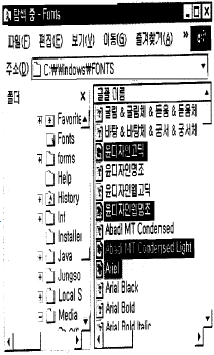
- 해당 파일을 마우스로 클릭한다.
- 툰키를 누른 채 해당 파일을 마우스로 클릭한다.
- 툼키를 누른 채 해당 파일을 마우스로 클릭한다.
- 툴키를 누른 채 해당 파일을 마우스로 클릭한다.
(정답률: 알수없음)
55. 컴퓨터에서 정중하고 교양있는 네트워킹 통신과 행동을 무엇이라 하는가?
- emoticon
- netizen
- etiquette
- Netiquette
(정답률: 알수없음)
56. 곡률을 가진 시험체를 탐상하기 위하여 RB-A8로 굴절각을 측정하려 한다. RB-A8의 두께가 tmm일 때 0.5skip 구간에서 탐촉자 앞면에서 RB-A8의 끝면까지 거리가 g, 0.5skip ∼1skip 구간에서 RB-A8의 끝면까지의 거리가 h라면 탐상 굴절각θ를 구하는 올바른 식은?
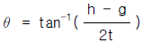
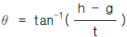
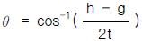
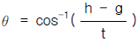
(정답률: 알수없음)
57. KS B 0896에 의한 강용접부의 초음파탐상 시험방법을 적용할 수 있는 모재두께의 하한치는 몇 mm인가?
- 8mm
- 6mm
- 4mm
- 10mm
(정답률: 알수없음)
58. 다음은 PC의 소프트웨어에 대한 내용이다. 이 중 틀린 것은?
- 하드웨어가 컴퓨터 시스템의 물리적인 측면을 나타내는데 비해 소프트웨어는 논리적인 동작을 나타 낸다.
- 소프트웨어는 흔히 프로그램이라고 하며, 이러한 프로그램은 방송이나 음악회의 프로그램처럼 작업의 진행 순서를 논리적으로 나열한 것이다.
- 프로그램에서 사용되는 명령어는 C언어, Visual Basic 언어 등의 프로그래밍 언어의 문법에 따라 작성되어야 하는데, 이렇게 컴퓨터 명령어를 이용하여 프로그램을 작성하는 일을 프로그래밍이라고 한다.
- 소프트웨어중의 시스템 소프트웨어는 특정 목적을 위해 작성한 프로그램으로 워드 프로세서, 웹 브라우저가 대표적인 예이다.
(정답률: 알수없음)
59. KS B 0896에서 규정한 5㎒ 경사각탐촉자의 원거리 분해능은 얼마 이하이어야 하는가?
- 2mm 이하
- 3mm 이하
- 5mm 이하
- 9mm 이하
(정답률: 알수없음)
60. 전 세계 인터넷 사용자 및 서비스 제공업체들이 각 분야별로 공지 사항 및 최신 정보나 뉴스를 게시, 검색할 수있게 해주는 서비스는?
- Gopher
- WWW(World Wide Web)
- WAIS
- USENET
(정답률: 알수없음)
4과목: 금속재료 및 용접일반
61. 용접봉의 용융속도를 나타내는 것으로 가장 적합한 것은?
- 단위 시간당 소비되는 용접봉의 길이 또는 무게
- 단위 시간당 소비되는 아크전압
- 단위 시간당 소비되는 아크전류
- 단위 시간당 진행되는 용접속도
(정답률: 알수없음)
62. 40㎜2의 단면적을 갖는 재료에 500㎏f의 최대하중이 작용 하였다면 이 재료의 인장강도(㎏f/㎜2)는?
- 10.0
- 12.5
- 15.0
- 16.5
(정답률: 알수없음)
63. Fe - C 상태도에서 철금속재료 분류시 강(steel) 의 탄소함유량은?
- 약 0.0001% 이하
- 약 0.0218∼2.11%
- 약 2.12∼6.67%
- 약 6.68% 이상
(정답률: 알수없음)
64. 연강판의 가스 용접시 모재 두께가 3mm 일 때, 다음 중 가장 알맞는 용접봉의 직경은?
- 1mm
- 1.5mm
- 2mm
- 4mm
(정답률: 알수없음)
65. 다음 중 플래시 용접의 장점이 아닌 것은?
- 용접 강도가 크다.
- 전력 소모가 적다.
- 업셋량이 크다.
- 모재 가열이 적다.
(정답률: 알수없음)
66. 잔류응력에 대한 설명으로 올바른 것은?
- 심각한 결함이 아니므로 커도 좋다.
- 제거를 위하여 용접 후 열처리가 필요하다.
- 저온에서 사용하는 구조물에서는 아무 영향이 없다.
- 국부적으로 일어나지 않으며 응력 부식에 관계 없다.
(정답률: 알수없음)
67. 변형 전과 후의 위치가 어떠한 면을 경계로 하여 대칭이 되는 것과 같은 변형은?
- 슬립변형
- 탄성변형
- 연성변형
- 쌍정변형
(정답률: 알수없음)
68. 베어링용으로 사용되는 합금이 갖추어야 할 조건이 아닌 것은?
- 소착에 대한 저항력이 커야한다.
- 내식성이 좋아야 한다.
- 표면이 취성과 연질이어야 한다.
- 내 하중성이 좋아야 한다.
(정답률: 알수없음)
69. 금속이나 합금 중 면심입방격자에 대한 설명이 옳은 것은?
- 단위정내에 2개의 원자가 있다.
- 체심입방격자와 같은 조대한 구조를 가지고 있다.
- 원자충전인자는 0.68 이다.
- 대표적인 금속은 Cu, Aℓ, Ni 등이다.
(정답률: 알수없음)
70. 고강도 저합금강으로써 자동차용 탄소강판의 대용제품은?
- STS 합금
- HSLA합금
- WPC강
- FRM강
(정답률: 알수없음)
71. AW 300인 교류 아크용접기의 정격 사용률이 40%일 때, 이 용접기의 정격 사용률에 대한 설명으로 올바른 것은?
- 300[A]의 전류로 용접했을 때 10분 중 6분만 용접하고, 4분을 쉰다는 뜻이다.
- 300[A]의 전류로 용접했을 때 10분 중 4분만 용접하고, 6분을 쉰다는 뜻이다.
- 120[A]의 전류로 용접했을 때 10분 중 6분만 용접하고, 4분을 쉰다는 뜻이다.
- 120[A]의 전류로 용접했을 때 10분 중 4분만 용접하고, 6분을 쉰다는 뜻이다.
(정답률: 알수없음)
72. 다음 용접이음에서의 잔류 응력을 측정하는 방법 중 정량적 방법이 아닌 것은?
- 부식법
- 응력 이완법
- X 선법
- 광탄성에 의한 방법
(정답률: 알수없음)
73. 금속을 냉간가공하면 결정입자가 미세화 되어 재료가 단단해 지는 현상은?
- 가공경화
- 취성파괴
- 시효경화
- 표면경화
(정답률: 알수없음)
74. 보기와 같은 용접기호의 표시법에 대한 설명으로 틀린 것은?
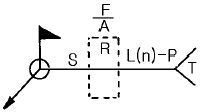
- F: 다듬질 방법의 기호
- A: 홈의 루트 간격치수
- S: 용접부의 단면치수 또는 강도
- n: 점 용접 등의 수
(정답률: 알수없음)
75. 전기저항용접법인 점용접 조건의 3요소에 대하여 설명한 것 중 틀린 것은?
- 구리나 알루미늄과 같은 열전도도가 큰 재료는 낮은 전류를 사용한다.
- 전류값이 너무 크면, 과열되어 용융금속이 밖으로 나오고, 표면이 오목하게 된다.
- 강판을 점용접할때 적정전류에 통전시간을 길게 한다.
- 가압력이 적을 때는 접촉저항 분포가 불균일하다.
(정답률: 알수없음)
76. 재결정온도가 약 1000℃에 해당되는 금속은?
- Cu
- W
- Sn
- Ni
(정답률: 알수없음)
77. 용접시공에서 본 용접하기 전에 가접할 때 일반적인 주의사항으로 틀린 것은?
- 본 용접과 같은 온도에서 예열한다.
- 본 용접자와 동등한 기량을 갖는 용접자로 하여금 가접하게 한다.
- 용접봉은 본 용접 작업할 때 사용하는 것보다 약간 굵은 것을 사용한다.
- 가접의 위치는 부품의 끝 모서리, 각 등과 같이 단면이 급변하여 응력이 집중되는 곳은 가능한 피한다.
(정답률: 알수없음)
78. 6:4황동에 Fe를 1-2% 첨가한 구리합금은?
- 코로손
- 델타메탈
- 애드미럴티
- 인청동
(정답률: 알수없음)
79. 다음 용접법 중 전기 저항 용접인 것은?
- 업셋 맞대기 용접
- 전자비임 용접
- 피복 아크 용접
- 탄산가스 용접
(정답률: 알수없음)
80. 청동용탕중에 0.⑤-0.5% 첨가함으로써 탈산작용과 용탕의 유동성 개선 및 강도, 경도, 내마모성, 탄성을 향상 시키는 원소는?
- Aℓ
- Si
- P
- Pb
(정답률: 알수없음)